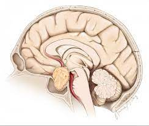

Pituitary tumors.

SYMPTOMS:
- Nausea and vomiting
-
Weakness
-
Feeling cold
-
Less frequent or no menstrual periods
-
Sexual dysfunction
-
Increased amount of urine
-
Unintended weight loss or gain
CAUSES
- The cause of uncontrolled cell growth in the pituitary gland, which creates a tumor, remains unknown.
-
The pituitary gland is a small, bean-shaped gland situated at the base of your brain, somewhat behind your nose and between your ears. Despite its small size, the gland influences nearly every part of your body. The hormones it produces help regulate important functions, such as growth, blood pressure and reproduction.
-
A small percentage of pituitary tumor cases run in families, but most have no apparent hereditary factor. Still, scientists suspect that genetic alterations play an important role in how pituitary tumors develop
DIAGNOSIS
- Blood and urine tests. These tests can determine whether you have an overproduction or deficiency of hormones.
-
Brain imaging. A CT scan or MRI scan of your brain can help your doctor judge the location and size of a pituitary tumor.
-
Vision testing.This can determine if a pituitary tumor has impaired your sight or peripheral vision.
TREATMENT
- Many pituitary tumors don't require treatment. Treatment for those that do depends on the type of tumor, its size and how far it has grown into your brain. Your age and overall health also are factors.
-
Treatment involves a team of medical experts, possibly including a nose and sinus surgeon, brain surgeon (neurosurgeon), endocrine system specialist (endocrinologist) and a radiation oncologist. Doctors generally use surgery, radiation therapy and medications, either alone or in combination, to treat a pituitary tumor and return hormone production to normal levels.